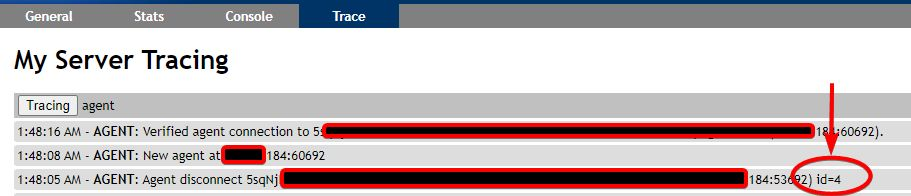
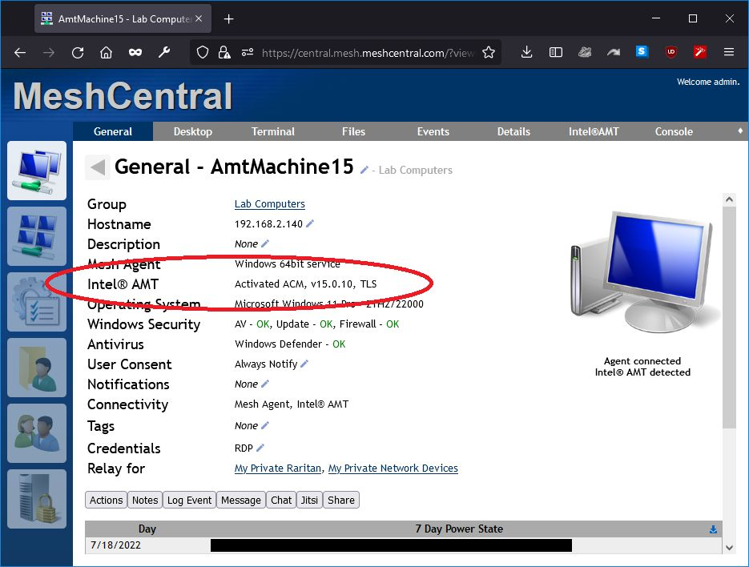
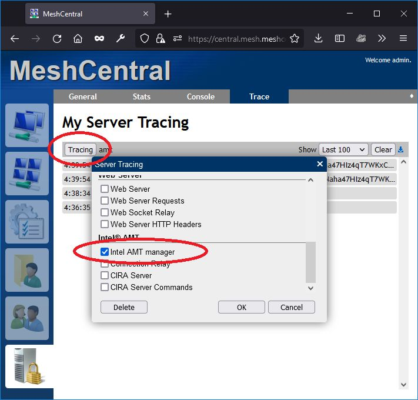
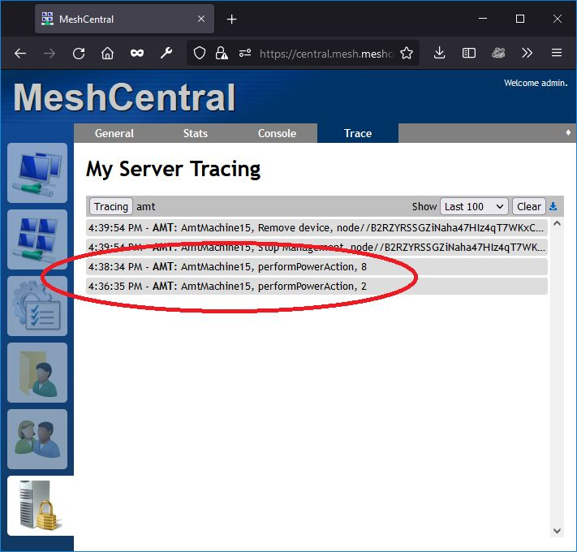

Debugging
Websockets Video
Make sure you understand how MeshCentral works with your browser using chrome developer tools.
MeshCentral Server
Useful config.js settings
https://github.com/Ylianst/MeshCentral/blob/master/meshcentral-config-schema.json
"AgentsInRAM": false,
"AgentUpdateBlockSize": 2048,
"agentUpdateSystem": 1,
"noAgentUpdate": 1,
"WsCompression": false,
"AgentWsCompression": false,
Understanding node and paths
Note that when running MeshCentral, you should always run from the path that is parent to node_modules, so you do this:
cd C:\Program Files\Open Source\MeshCentral
node node_modules\meshcentral
You do NOT do this:
cd C:\Program Files\Open Source\MeshCentral\node_modules\meshcentral
node meshcentral
The problem with the second command is that NPM may install missing modules in the incorrect location.
Also, in general I recommend not using the MeshCentral MSI Installer and just install manually unless you are very scared of the command prompt. Anyone that knows a bit about the shell should install MeshCentral like this:
mkdir c:\meshcentral
cd c:\meshcentral
npm install meshcentral
node node_modules\meshcentral
(ctrl-c when done installing optional modules)
node node_modules\meshcentral --install
This way, you have a lot more control over what is going on. In my opinion, the MSI installer basically does the same thing and installs NodeJS for you.
Unable to update server
Generally the problem is that MeshCentral can't find the npm tool and therefore, can't run it to see if there is a new version. You can fix this by setting the path to npm in the config.json like this:
{
"settings": {
"npmPath": "c:\\npm.exe",
"npmProxy": "http://1.2.3.4:80"
}
}
The problem could also be that you need a proxy, the configuration line to that is above.
You can also manually update. Just stop your server and so this:
mv node_modules node_modules_bak
npm install meshcentral
node node_modules/meshcentral
Then wait for all optional modules to install, then once the server starts hit ctrl-c and start up the server again. You can also use the following to help you start/stop the server:
node node_modules/meshcentral --install
node node_modules/meshcentral --uninstall
node node_modules/meshcentral --start
node node_modules/meshcentral --stop
Port Troubleshooting on server
If you're getting a port 4433 is not available error, this is because another process is using this port, very likely another instance of MeshCentral. If your MeshCentral server is bound to ports 81/444 MeshCentral could not get port 80/443 and got the next available ones.
In general the problem is that you are running two MeshCentral instances at the same time. Probably one as a background Windows Service and one in the command line. Which ever instance can grab port 4433 will have a running MPS and CIRA should work, but the second instance will not have port 4433 and CIRA will not work.
Running Meshcentral server in debug mode
Debug more will cause MeshCentral to output a lot of debug messages to the console. To display all debug messages, run MeshCentral like this:
node node_modules/meshcentral --debug
A more practical way to run the debug command it to specify what messages you want printed out using a comma seperated list, for example:
node node_modules/meshcentral --debug web,amt,mps
Here is the list of all debug options:
cookie - Cookie encoder
dispatch - Message Dispatcher
main - Main Server Messages
peer - MeshCentral Server Peering
agent - MeshAgent traffic
agentupdate - MeshAgent update
cert - Server Certificate
db - Server Database
email - Email/SMS/Push Traffic
web - Web Server
webrequest - Web Server Requests
relay - Web Socket Relay
httpheaders - Web Server HTTP Headers
authlog - User Authentication Log
amt - Intel AMT
webrelay - Connection Relay
mps - CIRA Server
mpscmd - CIRA Server Commands
You can also specify the debug option in the config.json file in the settings section. For example:
"settings": {
"debug": "web,amt,mps"
}
Enabling trace in your browser Dev Tools
You can enable browser console tracing by adding trace=1 as a parameter to the URL of the MeshCentral main web page. For example https://myserver.com/?trace=1. Once present, open the browser's console window to see all web client tracing messages.
To log all database queries, change log_statement in /etc/postgresql/13/main/postgresql.conf
# CUSTOM
log_statement = 'all' # none, ddl, mod, all
The stacktrace was logged to stdout/journalctl. Supposedly, you can enable debug logging for node modules by adding DEBUG=<modulename> to the environment.
Adding this to /etc/systemd/system/meshcentral.service should do it but it didn't seem to do anything.
I think that's because Mesh uses the trace logging in the browser instead of logging things in the server logs.
Environment=DEBUG=mesh*
If you want to change node to meshcentral in journalctl, add this to /etc/systemd/system/meshcentral.service.
SyslogIdentifier=meshcentral
Finding agent problems
Using the servers My Server > console
agentstatus- Gives you summary counts of problemsagentissues- Gives IP:port and what errordupagents- Gives duplicateAgent IP's, counts and names
Logging it all
To log everything that's possible, prepare the log directory.
mkdir /meshcentral/meshcentral-logs/
chown tactical:tactical logs
ln -s ../meshcentral-logs/log.txt /meshcentral/meshcentral-data/log.txt
And then add this to your config.
"meshErrorLogPath": "/meshcentral/meshcentral-logs/",
"authLog": "/meshcentral/meshcentral-logs/auth.log",
"log": [
"cookie",
"dispatch",
"main",
"peer",
"web",
"webrequest",
"relay",
"webrelaydata",
"webrelay",
"mps",
"mpscmd",
"swarm",
"swarmcmd",
"agentupdate",
"agent",
"cert",
"db",
"email",
"amt",
"httpheaders",
"websocket"
],
You'll then have 3 files:
-rw-rw-r-- 1 tactical tactical 2593 Feb 2 12:22 auth.log
-rw-r--r-- 1 tactical tactical 147593 Feb 2 12:31 log.txt
-rw-rw-r-- 1 tactical tactical 381 Feb 2 12:02 mesherrors.txt
log.txt will now log everything in the Trace tab
Restricting server to specific IP(s)
When doing debugging on my development server, I use this line in the settings section to block all agent connections except the agent I want:
"agentAllowedIp": [ "192.168.2.147" ],
Of course, this is just for debugging.
Finding system ID types
https://serverurl/meshagents aka trying figure out what this is

Pull down cert .crt file from internet
See #1662 We have run into this challenge before, where our .crt file expired and then all our agents were unable to connect. In our case, the TLS cert was available on the internet, and thus, we were able to use these commands to update it:
echo -n \| openssl s_client -connect yourdomain.com:443 2> /dev/null\| sed -ne '/-BEGIN CERTIFICATE-/,/-END CERTIFICATE-/p' > /opt/meshcentral/meshcentral-data/webserver-cert-public.crt
service meshcentral restart
MeshAgent
Troubleshooting agent
./meshagent -state
Agent Debug Logs to server
This automatically downloads all agent error logs into meshcentral-data/agenterrorlogs.txt
Set in config.json
"agentLogDump": true
Determine Agent capabilities
On the server goto the agents console tab. Type:
info
Useful MeshAgent.msh flags
https://github.com/Ylianst/MeshAgent/blob/master/meshcore/agentcore.h#L190
controlChannelDebug=1
logUpdate=1
Obtain generated .msh File
If you need a trick to get the .msh file, you can add ?debug=1 to the URL and click "Add Agent", there will be an extra link to download it.
MeshAgent Commands
MeshAgent run
MeshAgent dbTool.js list
Forcing Core version from Cmdline
- Download meschore.js and rename to CoreModule.js and put it alongside MeshAgent.exe
- Stop MeshAgent service
- Run
MeshAgent.exe dbTool.js import CoreModule
On the fly Patching MeshAgent
There are two ways to do this... When debugging, and making changes, you can modify the .js file directly, and just save it in the same folder as the agent binary... The agent will use the .js file from disc if it's there, if it's newer than the one compiled in the binary. You don't even need to restart the agent. You can just clear the core, and reload the core.....
When you are satisfied with your changes to the .js file, you can use the clipboard, in the following fashion:
meshagent -exec "require('clipboard').nativeAddCompressedModule('foo');process.exit();"
if the file you modified isn't in the same folder as the agent binary, you can use the following command if you don't want to move the file, and edit it directly in the modules folder:
meshagent -exec "setModulePath('pathToFolder');require('clipboard').nativeAddCompressedModule('foo');process.exit();"
This command is just like the previous, except it searches for modules in the path specified.
Just substitute foo, with the name of the module that you modified. It will load the module from disc, compress it, and save it into the clipboard.. So you can just load up your editor for ILibDuktape_Polyfills.c, and find where that particular module is defined... and paste directly from the clipboard... The clipboard will contain all the necessary C code to uncompress and load the module.
If the compressed result is relatively long, it will auto break it up into multiple lines to work around an issue with visual studio's maximum string literal limitations.
Agent Debugging using MeshCore JS Debugger
(#119) How to test changes to the meshagent and recompile them.
- Copy duktape-debugger.js to the mesh directory on the target machine.
- From the console tab of the agent, enter this command, substituting the port number you want to use instead of 9999
eval "attachDebugger({ webport: 9999 })"
Then open your browser to http://localhost:9999 or whatever port you used.
Note
If you pause the debugger, and happen to forget about it, the agent will automatically kill itself and restart because it will think that a thread is stuck. Default debugger timeout is 10 minutes, you may find a log entry saved to disk saying "Microstack Thread STUCK", or something similar.
Troubleshooting Agent connectivity
If an agent keeps disconnecting and reconnecting, add this line to the "settings" section of the config.json:
"agentping": 30
This will cause MeshCentral to "ping" the agent every 30 seconds and the agent to respond with a "pong" each time. That usually solves the issue however, it does generate more traffic. If that works, you can remove the line and try this line instead:
"agentpong": 30
This will cause MeshCentral to "pong" the agent every 30 seconds, the agent will not respond. This usually fixes the issue, but you have half the traffic. I would also increase the time like:
"agentpong": 90
This is the best, you have one way traffic to all agents every 90 seconds. The larger the number you can get away with the better.
If you ever get the same problem but on the browser side, you can also use one of these:
"browserping": 30
"browserpong": 30
Same idea, browser side instead of agent side.
Intel AMT
To debug issues, confirm that Intel AMT is active and there MeshCentral is not showing any red errors on the "Intel AMT" line:

Next, you can go in the "My Server / Trace" tab and enable tracing on the "Intel AMT Manager" like this:

You can then open another tab and select to power off or power on Intel AMT, you should see "performPowerAction" with 2 or 8 depending on power on/off.
